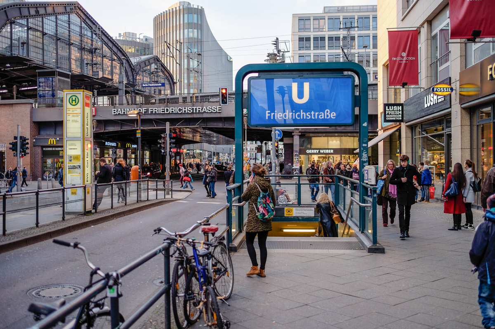

Başlıktan da anlayacağınız üzere Berlin ile ilgili ilk izlenimim Türk nüfusunun çok yoğun olması oldu. Bunu aslında herkes biliyor ama oraya gidip, her makinada Türkçe menü görmek ve havaalanında anonsların Türkçe yapılmasını duymak insanı oldukça şaşırtıyor... "Of şu kız çok güzelmiş" dediğim kızın bile Türk çıkması ile oralarda çenemi tutmayı öğrendim. Kurban Bayramı tatilinde Gdańsk'ta katılacağım bir konferans için ilk durak olarak Almanya'ya gittik. Bu yazımda size hem küçük gezi notlarını hem de Berlin'e gitmeden önce yapılacak hazırlıkları anlatmak istedim. Çünkü insan gerçekten bir yere seyahat edeceğinde oranın güzelliklerinin yanı sıra nasıl yapılır, fiyatlar ne kadardır bunları bilmek istiyor. Yoksa Berlin'in tarihi, gezilecek yerleri bir çok sayfada mevcut.

Ben de aklıma gelenleri madde madde paylaştım!
- Polonya'ya uçak biletleri pahalı olduğu için ve Berlin'i görmenin güzel bir fırsat olduğunu düşündüğümüzden uçak biletlerimizi İzmir - Berlin olarak aldık. Uçak biletlerini Oktay'ın keşfi ve Turkcell'in de desteklediği bir site olan Bavul.com'dan aldık. Fiyatlar normal havayollarının sitelerine göre biraz daha uygundu. Uçuşlarınızdan önce değerlendirmenizi öneririm, biz hiç bir sorun yaşamadık.
- Berlin'e indiğimiz zaman hizmet pasaportu (gri) ile gittiğimiz için pasaport polisinin biraz ilgisini çektik. Bu noktada önceden çıktısını aldığım otel rezervasyonları, konferans davet mektubu, otobüs biletleri gibi dökümanların sorunsuz geçmemizde çok büyük faydası oldu.
- Berlin'de de Gdańsk'ta da en büyük yardımcımız Google Maps oldu. Kesinlikle seyahatiniz öncesi çevrimdışı haritaları telefonunuza indirerek yola çıkın. Bizim ülkemizde hala otobüs, metro gibi ulaşım araçlarına dair rotaları belirtmese de Berlin'de ulaşım mükkemmel olduğu için Google Maps'te mükemmeldi. Tatil sonrası Google Maps'e katkı sağlayarak yerel rehber olabileceğinizi öğrendim ve hatta bir önceki yazımda bundan bahsettim. Şu an her yerin fotoğrafını çekip, çalışma saatlerini yazarak Google Maps'e destek olmaya çalışıyorum.
- Gideceğiniz güzergahları belirledikten sonra benim tavsiyem ulaşım için günlük bilet almanız. Tek bilet 2.70 euro iken günlük bilet 7 euro ve istediğiniz araca binip inebiliyorsunuz. (Biz kesinlikle verdiğimiz paranın hakkını çıkardık :))
- Ben de eşim de turistik yer gezmekten pek hoşlanmadığımız için Müze Adası'nı ilk gün bolca yürüyerek gezdik, sonrası için şehrin farklı yerlerini keşfetmek daha eğlenceli oldu... Günlük biletlerimiz ile Berlin'i kuzeyden güneye, doğudan batıya tavaf ettik. Canımızın istediği yerde inip parklarda vakit geçirdik. Yeşile hasret kaldığımız için bize parklar daha ilgi çekici geldi.
- Şehirin çeşitli turistik mekanlarında valizlerinizi ve eşyalarınızı bırakabileceğiniz çeşitli kasalar var. 4 saati 2 euro ya valizlerinizi bırakabiliyorsunuz ve oldukça güvenliler. Biz hep Alexanderplatz Meydanı'ndaki kasaları kullandık ve hiç bir problem yaşamadık.
- Şehrin en sevdiğim yanı bir bisiklet trafiği olması, önceleri bana abartı geliyordu fakat kendi bisikletim olunca anladım ki yaşanabilir bir şehrin en önemli ayrıntısı bisiklet yolları ve bu yollara saygı duyan araç sürücüleri! Berlin bunu çok güzel başarmış, her sokakta kesintisiz bisiklet yolları var. Şehir düz olduğu için ulaşım oldukça kolay. Biz de bir gün bisiklet kiraladık ama ben kontra pedal bisiklete hiç binmediğim için trafiği baya aksattım :)